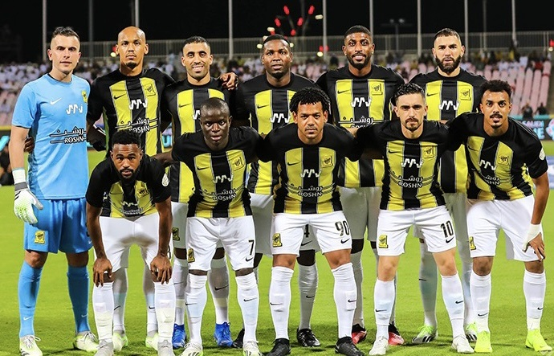

تعريف
نادي الاتحاد العربي السعودي وغالبًا ما يشار إليه اختصارًا باسم الاتحاد أو اتحاد جدة، هو نادي كرة القدم محترف، تأسس عام 1927 في جدة بالسعودية. قضى النادي تاريخه بالكامل في الدرجة العُليا منذ تأسيس الدوري السعودي المُسمى حاليًا دوري المحترفين السعودي منذ 1976–77.
التاريخ
26 ديسمبر من عام 1927، تأسس نادي الاتحاد، من قبل بعض أبرز عشاق كرة القدم في مدينة جدة. حيث التقوا في مكاتب شركات البث الإذاعي وناقشا فكرة تشكيل نادي كرة قدم يتنافس مع فرق السفر المختلفة آنذاك، ويكون أيضًا مصدرًا ترفيهيًا للسكان ومنفذًا لشباب المدينة لممارسة كرة القدم.
الانجازات
أول بطولة للنادي هي كأس نيشان الناظر في أول سادس موسم للنادي. في 1982، استطاع النادي الفوز بأول لقب في بطولة الدوري، بينما أول بطولة كأس الملك كانت في عام 1958. من حيث عدد الألقاب، يُعتبر عقد التسعينيات إلى الألفية، العقد الأنجح في تاريخ نادي الاتحاد، حيث استطاع حصد خمسة بطولات دوري وحصد على كأس الاتحاد السعودي مرتين، وفاز بأربع كؤوس ولي العهد، دوري ابطال العرب وكأس الخليج للأندية لقب لكل منهما، وكأسي دوري أبطال آسيا، ولقب كأس الكؤوس الآسيوية، وتم تحقيق الثلاثية والرباعية. بالمجمل، يعتبر نادي الاتحاد من أنجح الأندية في المملكة العربية السعودية، وقد حصل على 39 بطولة رسمية، 32 منها محلية. بالإضافة إلى النجاحات القارية، يعد النادي أحد الأندية الآسيوية الثلاثة الوحيدة التي فازت بلقب دوري أبطال آسيا مرتين على التوالي.
